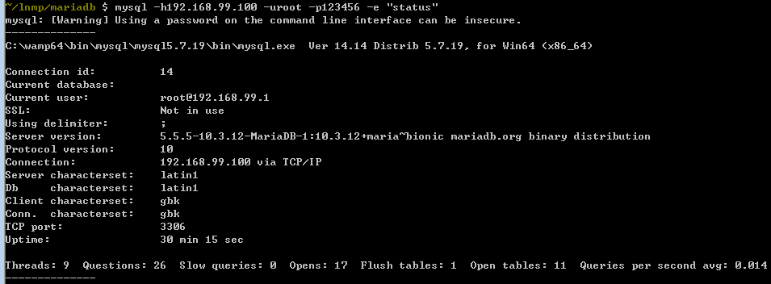
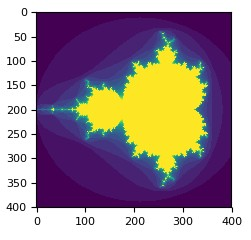
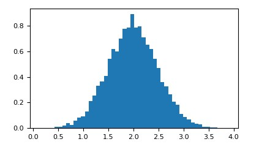
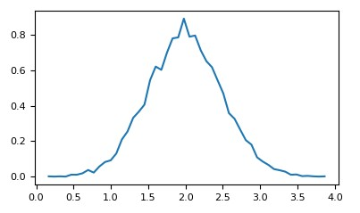
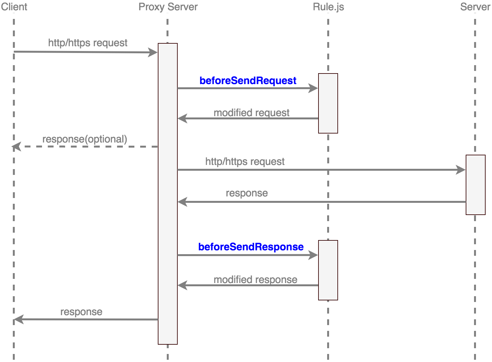

知识点：
1 | port 未调用 on 方法，设置回调函数的监听端口，默认使用主服务器的回调函数，port 可以通过 on 方法设置的回调有： |
1 | 所有事件回调均在 $server->start 后发生 |
1 | port 未调用 on 方法，设置回调函数的监听端口，默认使用主服务器的回调函数，port 可以通过 on 方法设置的回调有： |
1 | 所有事件回调均在 $server->start 后发生 |
1 | PYSPARK_DRIVER_PYTHON=ipython ./bin/pyspark --master local[4] |
1 | 创建索引 |
获取索引数据1
curl -X GET "localhost:9200/customer/_doc/1?pretty"
批量创建索引 5MB~15MB, 1,000~5,000条记录为宜
下载accounts.json 文件，1
2
3
4
5{"index":{"_id":"1"}}
{"account_number":1,"balance":39225,"firstname":"Amber","lastname":"Duke","age":32,"gender":"M","address":"880 Holmes Lane","employer":"Pyrami","email":"amberduke@pyrami.com","city":"Brogan","state":"IL"}
curl -H "Content-Type: application/json" -XPOST "localhost:9200/bank/_doc/_bulk?pretty&refresh" --data-binary "@accounts.json"
查看索引索引情况1
curl "localhost:9200/_cat/indices?v"
搜索1
2
3
4
5
6
7
8
9
10
11
12
13
14
15
16
17
18
19
20
21
22
23
24
25
26
27
28
29
30
31
32
33
34
35
36
37
38
39
40
41
42
43
44
45
46
47
48
49
50
51curl -X POST "localhost:9200/bank/_search?pretty" -H 'Content-Type: application/json' -d'
{
"query": { "match_all": {} },
"sort": [
{ "account_number": "asc" }
],
"from": 10,
"size": 10
}
'
curl -X GET "localhost:9200/bank/_search?pretty" -H 'Content-Type: application/json' -d'
{
"query": { "match": { "address": "mill lane" } }
}
'
curl -X GET "localhost:9200/bank/_search?pretty" -H 'Content-Type: application/json' -d'
{
"query": { "match_phrase": { "address": "mill lane" } }
}
'
curl -X GET "localhost:9200/bank/_search?pretty" -H 'Content-Type: application/json' -d'
{
"query": {
"bool": {
"must": [
{ "match": { "age": "40" } }
],
"must_not": [
{ "match": { "state": "ID" } }
]
}
}
}
'
curl -X GET "localhost:9200/bank/_search?pretty" -H 'Content-Type: application/json' -d'
{
"query": {
"bool": {
"must": { "match_all": {} },
"filter": {
"range": {
"balance": {
"gte": 20000,
"lte": 30000
}
}
}
}
}
}
'
查看索引mapping情况（索引中各字段的映射定义）1
curl -X GET "localhost:9200/bank/_mapping?pretty"
聚合查询 Refer
记得使用state.keyword，使用完整keyword，其中size=0 表示不需要返回参与查询的文档1
2
3
4
5
6
7
8
9
10
11
12
13
14
15
16
17
18
19
20
21
22
23
24
25
26
27
28
29
30
31
32
33
34
35
36
37
38
39
40
41
42
43
44
45
46
47
48
49
50
51
52curl -X GET "localhost:9200/bank/_search?pretty" -H 'Content-Type: application/json' -d'
{
"size": 0,
"aggs": {
"group_by_state": {
"terms": {
"field": "state.keyword"
}
}
}
}
'
{
"size": 0,
"aggs": {
"return_expires_in": {
"sum": {
"field": "expires_in"
}
}
}
}'
{
"size": 0,
"aggs": {
"return_min_expires_in": {
"min": {
"field": "expires_in"
}
}
}
}'
{
"size": 0,
"aggs": {
"return_max_expires_in": {
"max": {
"field": "expires_in"
}
}
}
}'
{
"size": 0,
"aggs": {
"return_avg_expires_in": {
"avg": {
"field": "expires_in"
}
}
}
}'
索引自动创建
添加索引数据时，索引mapping会自己创建1
2
3
4
5
6
7
8
9
10
11
12
13
14
15
16
17
18
19
20PUT _cluster/settings
{
"persistent": {
"action.auto_create_index": "twitter,index10,-index1*,+ind*"
}
}
PUT _cluster/settings
{
"persistent": {
"action.auto_create_index": "false"
}
}
PUT _cluster/settings
{
"persistent": {
"action.auto_create_index": "true"
}
}
es之零停机重新索引数据
生产环境的索引一定要记得创建alias，不然后面就等着哭吧！
以下所有操作都是基于一个前提：在建原始索引的时候，给原始索引创建了别名
1 | PUT /my_index_v1 //创建索引 my_index_v1 |
新建一个空的索引bak_bak，类型：account,分片20,age字段由long改成了string类型，具有最新的、正确的配置
1 | { |
设置别名
1 | POST /_aliases |
查询当前别名下的所有索引：
1 | GET /*/_alias/my_index |
数据重新索引
1 | POST _reindex |
查看数据是否进入新的索引1
GET articles2/article/1
1 | curl -XPOST localhost:8305/_aliases -d ' |
LNMP技术栈是Web开发中流行的技术栈之一，本文的目标是，利用docker搭建一套LNMP服务。
好，废话不多说，我们直入主题。
Docker CE（Community Edition）社区版本本身支持多种平台的安装，如Linux，MacOS，Windows等操作系统，此外，还支持AWS，Azure等云计算平台。
如果你使用的是Windows 10，那么你可以直接Docker Desktop for Windows。要使用此工具，你需要开启你Windows中的Hyper-V服务和BIOS中的Virtualization选项。
笔者使用的是Windows 7操作系统，直接使用Docker Toolbox，下载并安装即可。

本文中会使用到以下三个基础镜像：
三个镜像都是官方提供的镜像，官方镜像保证了稳定性的同时，同时也保留了一些扩展性，使用起来比较方便。
我们先把三个镜像下载到本地备用。打开Docker Quickstart Terminal，并执行：
1 | docker pull nginx:1.15 |
首先我们使用docker的基本命令来创建我们的容器。
打开Docker Quickstart Terminal后，执行：
1 | cd lnmp |
查看服务状态：
1 | mysql -h192.168.99.100 -uroot -p123123 -e "status" |
此处返回服务器状态信息

1 | docker run --name php-fpm --link mysql:mysql -p 9000:9000 \ |
--name php-fpm：
自定义容器名
--link mysql:mysql
与mysql容器关联，并将mysql容器的域名指定为mysql
-v $PWD/www:/var/www/html:ro
`$PWD/www`是宿主机的php文件目录
`/var/www/html`是容器内php文件目录
`ro`表示只读。
官方docker中已经包含的PHP的部分基本扩展，但是很显然这并不能满足大多数的使用场景。
因此，官方还提供了docker-php-ext-configure，docker-php-ext-install和docker-php-ext-enable等脚本供我们使用，可以更方便的安装我们的扩展。
此外，容器还提供对pecl命令的支持。
我们基于此安装我们常用一些扩展。
1 | docker-php-ext-install pdo pdo_mysql |
当然我们也可以选择直接编译安装。
1 | curl -fsSL 'http://pecl.php.net/get/redis-4.2.0.tgz' \ |
1 | docker run --name nginx -p 80:80 --link php-fpm:php \ |
--name nginx：
自定义容器名
--link php-fpm:php
与php-fpm容器关联，并将php-fpm容器的域名指定为php
-v $PWD/default_host.conf:/etc/nginx/conf.d/default.conf:ro
替换host文件
-v $PWD/html:/usr/share/nginx/html:ro \
替换网站根目录
至此，我们依次启动了mysql，php-fpm和nginx容器（顺序很重要，因为他们有依赖关系）。打开浏览器，访问http://192.168.99.100/，就是见证奇迹的时刻。
以上是比较常规的一种方式，也稍显麻烦。下面介绍docker-composer的配置方式。
1 | version: '3' |
具体可参考我的GitHub项目lnmp-container
NumPy是一个Python包。它代表“Numeric Python”。它是一个由多维数组对象和用于处理数组的例程集合组成的库。
Numeric，即 NumPy 的前身，是由 Jim Hugunin 开发的。也开发了另一个包Numarray，它拥有一些额外的功能。2005年，Travis Oliphant通过将 Numarray的功能集成到Numeric包中来创建NumPy包。目前这个开源项目已经有非常多的贡献者。
在安装了python和pip之后，一个命令搞定。
pip install numpy
然后我们进入Python交互式shell。
1 | import numpy as np |
如果你能正确执行上述代码，那么你的numpy环境就已经搭建好了。
ndarray.ndim：数组维度ndarray.shape：数组行和列的长度ndarray.size：同shapendarray.dtype：数组中元素的类型ndarray.itemsize：数组中单个元素所占字节数
1 | import numpy as np |
创建数组的方式有很多，我们直接看代码。
1 | import numpy as np |
1 | a = np.array( [20,30,40,50] ) |
1 | B = np.arange(3) |
1 | a = np.arange(10)**3 |
1 | a = np.floor(10*np.random.random((3,4))) |
1 | a = np.floor(10*np.random.random((2,12))) |
1 | a = np.arange(12) |
1 | a = np.arange(12)**2 # 平方 |
曼德布洛特集合
1 | import numpy as np |

1 | import numpy as np |
1 | a = np.arange(30) |
1 | import numpy as np |

1 | # 使用numpy计算 |

OpenCV是一个基于BSD许可（开源）发行的跨平台计算机视觉库，可以运行在Linux、Windows、Android和Mac OS操作系统上。它轻量级而且高效——由一系列C函数和少量C++类构成，同时提供了Python、Ruby、MATLAB等语言的接口，实现了图像处理和计算机视觉方面的很多通用算法。
HSV（Hue, Saturation, Value）是根据颜色的直观特性由A. R. Smith在1978年创建的一种颜色空间, 也称六角锥体模型（Hexcone Model）。、这个模型中颜色的参数分别是：色调（H），饱和度（S），亮度（V）。
目前在计算机视觉领域存在着较多类型的颜色空间（color space）。HSV是其中一种最为常见的颜色模型，它重新影射了RGB模型，从而能够视觉上比RGB模型更具有视觉直观性。
一般对颜色空间的图像进行有效处理都是在HSV空间进行的，HSV的取值范围如下：
1 | H: 0 ~ 180 |

这是我们的原图，我们希望把图片中间的绿色区域“扣”出来。
源码地址image_cutter
1 | #!/usr/bin/env python |
运行之后我们得到了我们的目标图区域：
一般来说，我们会选择一些比较纯净的颜色区块，从而比较容易控制噪点，提高准确率。
AnyProxy是一个开放式的HTTP代理服务器。
主要特性包括：
Node.js，开放二次开发能力，允许自定义请求处理逻辑类似的软件还有Fiddler，Charles等。对于二次开发能力的支持，Fiddler 提供脚本自定义功能（Fiddler Script）。
Fiddler Script的本质其实是用JScript.NET语言写的一个脚本文件CustomRules.js，语法类似于C#，通过修改CustomRules.js可以很容易的修改http的请求和应答，不用中断程序，还可以针对不同的URI做特殊的处理。
但是如果想要进行更加深入的定制则有些捉襟见肘了，例如发起调用远程API接口等。当然如果你是C#使用者，这当然不在话下了。
我们都知道Node.js几乎可以做差不多任何事:)，而基于Node.js的AnyProxy则给予了二次定制更大的空间。
因为是基于Node.js，故而Node支持的平台AnyProxy都能支持了。
npm install -g anyproxy
对于Debian或者Ubuntu系统，在安装AnyProxy之前，可能还需要安装 nodejs-legacy。
sudo apt-get install nodejs-legacy
anyproxy
启动后将终端http代理服务器配置为127.0.0.1:8001即可
访问http://127.0.0.1:8002 ，web界面上能看到所有的请求信息
AnyProxy提供了二次开发的能力，你可以用js编写自己的规则模块（rule），来自定义网络请求的处理逻辑。

例如我们想针对某些域名做检测，看经过AnyProxy代理的请求中是否包含了我们想要检测的那些域名。那么我们可以通过以下脚本实现：
首先我们安装两个包
npm install redis
npm install request
然后编写文件check.js
1 | // file: check.js |
值得注意的是，我们在脚本中还是使用了一个本地Redis服务，如果你不想在本地启动一个Redis实例，你也可以使用keyvalue.immanuel.co。
keyvalue.immanuel.co是一个在线的Key-Value存储服务，完全免费。对于这种临时的，不重要的标记真是再方便不过了。个人使用下来觉得很赞。
anyproxy --rule check.js
AnyProxy的更多功能可以参考官方文档。
代理服务器（Proxy Server）的基本行为就是接收客户端发送的请求后转发给其他服务器。代理不改变请求URI，会直接发送给前方持有资源的目标服务器。根据代理类型的不同，我们对于目标服务器的匿名程度也有所不同。
在没有经过代理服务器的情况下，目标服务端能获取到如下信息。
1 | REMOTE_ADDR = your IP |
Transparent Proxy）1 | REMOTE_ADDR = proxy IP |
透明代理虽然可以直接“隐藏”你的IP地址，但还是可以从HTTP_X_FORWARDED_FOR查到你是IP地址。这也是我们一般所说的Cache Proxy。
Anonymous Proxy）1 | REMOTE_ADDR = proxy IP |
使用匿名代理，别人只能知道你用了代理，无法知道你是谁。这也是使用得比较广泛的一种代理方式。
Distorting Proxy）1 | REMOTE_ADDR = proxy IP |
使用了混淆代理，别人还是能知道你在用代理，但是会得到一个假的IP地址。
Elite proxy或High Anonymity Proxy）1 | REMOTE_ADDR = Proxy IP |
使用高匿代理时，我们发现跟我们不使用代理是一样的，别人此时根本无法发现你是在用代理服务，这是最好的选择。
代理自动配置（Proxy auto-config，简称PAC），用于定义应用该如何自动选择适当的代理服务器来访问一个网址。一般使用在浏览器中，现在在一些便携式设备（Android设备，iOS设备）中，WIFI连接时也可以添加PAC协议来实现自动代理配置。
在我们的场景中，我们有一些网站我们并不想去访问，譬如一些自动弹出的广告，某一个糟心的网站等等。这时就可以利用PAC文件来主动屏蔽这些网站。
编写PAC文件filter.pac
1 | // 我们不想访问的网站域名 |
把PAC文件上传到网络上，且保证我们能直接访问到该文件。如果你有GitHub账号，你可以直接在你的项目中上传该文件。
在浏览器插件（如SwitchySharp）中，或者是在WIFI链接时的代理设置->自动选项中，填入我们上传的地址（我们的场景是https://github.com/oobspark/oobspark.github.io/blob/master/files/filter.pac）。